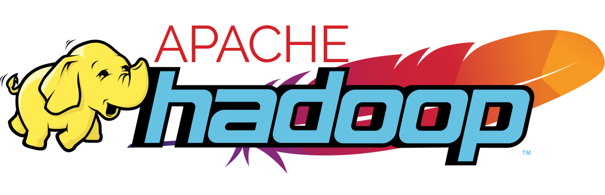
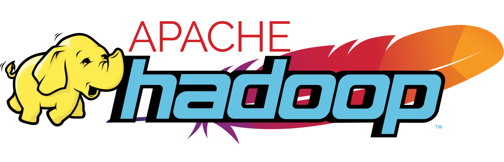

|| Estudiante de Economía, Computación e Informática || R & Python || Estadística || SQL || Azure || AWS || Power BI || DevOps || MLOps ||
📢 Soy un estudiante apasionado de Economía, Matemáticas, Programación y Estadística. Mi objetivo es convertirme en un profesional integral en estas áreas, capaz de analizar y resolver problemas complejos utilizando técnicas avanzadas de análisis de datos y modelado.
Mis herramientas


 
